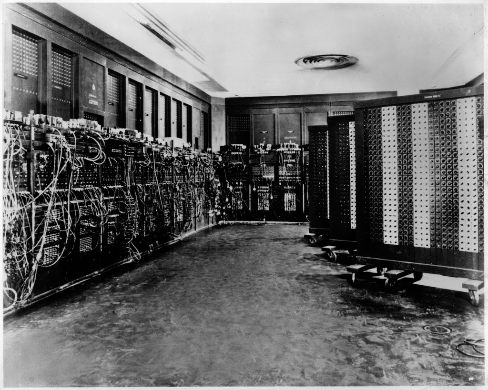

The ENIAC computer was a large computer that was used in the past. This was the first programmable electronic digital computer made. The creation of this computer was extremely helpful for its time. It helped a lot during World War two, which is interesting. There were many things during its time, where the ENIAC was huge for people, especially in America.
The cost of the computer was $487,000 which in todays day would be around $6.9 million dollars. You can see that the ENIAC was not something cheap. The ENIAC computer is different from the ones before its time. This computer used vacuum tubes and was able to run faster. The ENIAC was way more efficient than the prior computers out there.
The computer had its advantages and disadvantages. First off it was able to calculate things at high speeds and could process data fast. Although these things were great it had some setbacks to it. The size of the computer was extremely big and could not consume too much power, which is not convenient. I do think that although there were cons to it, it was a great invention.
